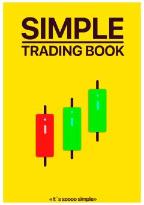

STKriptovalyuta savdosini boshlash uchun oddiy va amaliy qo'llanma.
Bu kitob kriptovalyuta savdosi asoslarini o'rgatadi: birjada hisob ochishdan tortib, turli trading strategiyalari va sham shakllari (candlestick patterns) tahlilini qamrab oladi. Kitobda FOMO (imkoniyatni o'tkazib yuborish qo'rquvi) psixologiyasi va undan qochish yo'llari ham ko'rib chiqiladi. Chart patterns va printable varaqlar bilan amaliy qo'llanma sifatida tuzilgan.